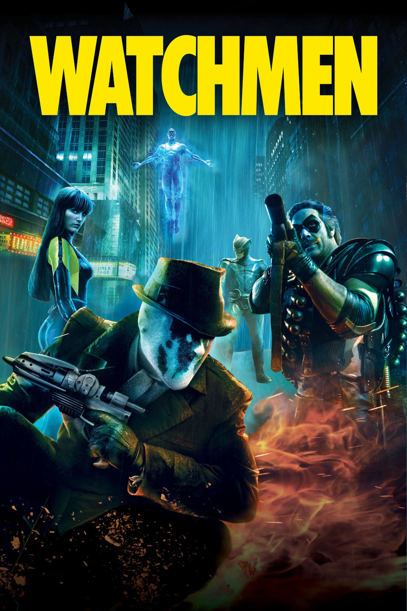

Мировая премьера: 6 марта 2009
Слоган: Кто теперь нас спасёт?
Сюжет: События разворачиваются в Америке, в 1985 году. Кто-то избавляется от супергероев, и они объединяют силы, чтобы отомстить за убийство одного из своих. Вскоре им предстоит раскрыть зловещий заговор, угрожающий всему человечеству. Хранители пытаются предотвратить неминуемую катастрофу, понимая, что именно они – мишень для уничтожения. Но если Хранители исчезнут, то кто спасёт нас?
Режиссёр: Зак Снайдер
В основе: Комикс "Хранители" (США, 1986-1987, авторы – Алан Мур и Дэйв Гиббонс)
В ролях:
| Джеки Эрл Хейли | Уолтер Ковач / Роршах |
| Патрик Уилсон | Дэн Драйберг / Вторая Ночная Сова |
| Малин Акерман | Лори Юпитер / Второй Шёлковый Призрак |
| Билли Крудуп | Джон Остерман / Доктор Манхэттен |
| Мэттью Гуд | Эдриан Вайдт / Озимандиас |
| Карла Гуджино | Сэлли Юпитер / Шёлковый Призрак |
| Джеффри Дин Морган | Эдвард Блейк / Комедиант |
| Мэтт Фрюэр | Эдгар Джакоби / Молох |
| Стивен МакХэтти | Холлис Мейсон / Ночная Сова |
| Лора Меннелл | Джени Слейтер |
| Дэнни Вудберн | Большая Шишка |
Бюджет: $ 130 млн.
Кассовые сборы в США: $ 108 млн.
Кассовые сборы в мире: $ 185 млн.
Продолжительность: 2 ч. 35 мин.
Рейтинг: 7.6